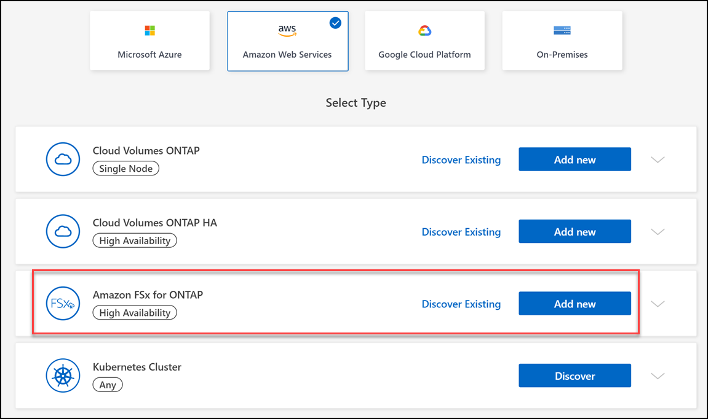

はじめに
はじめに
FSx for ONTAP作業環境の作成と検出
 変更を提案
変更を提案
BlueXPを使用すると’FSX for ONTAP 作業環境を作成または検出して’ボリュームや追加のデータサービスを追加および管理できます
ONTAP 作業環境用の FSX を作成します
最初のステップは、 ONTAP 作業環境用の FSX を作成することです。AWS 管理コンソールですでに ONTAP ファイルシステム用の FSX を作成している場合は、次の操作を実行できます "BlueXPを使用して発見します"。
BlueXPでFSX for ONTAP の作業環境を作成する前に、次のものが必要です。
-
BlueXPにONTAP 作業環境用のFSXを作成するために必要な権限を与えるIAMロールのARN。を参照してください "BlueXPにAWSクレデンシャルを追加しています" を参照してください。
-
ONTAP インスタンスの FSX を作成する場所のリージョンおよび VPN 情報。
-
BlueXPで、新しい作業環境を追加し、[Amazon Web Services]*を選択して[Add new]* for Amazon FSx for NetApp ONTAP をクリックします。

-
* FSx for ONTAP 認証*
-
ご使用のアカウントに、 FSX for ONTAP に対する適切な AWS 権限を持つ既存の IAM ロールがある場合は、ドロップダウンからそのロールを選択します。
-
アカウントにIAMロールがない場合は、*[Credentials]*をクリックし、ウィザードの手順に従ってAWS IAMロールのARNとFSx for ONTAP クレデンシャルを追加します。を参照してください "BlueXPにAWSクレデンシャルを追加しています" を参照してください。
-
-
詳細と資格情報
-
使用する作業環境名を入力します。
-
必要に応じて、プラス記号をクリックし、タグの名前と値を入力してタグを作成できます。
-
必要に応じて、FSx for ONTAPで週30分のメンテナンスを実行する開始時刻を指定できます。これは、メンテナンスが重要なビジネス活動と一致しないようにするために使用できます。* No preference *を選択すると、ランダムな開始時間が割り当てられます。これはいつでも変更できます。
-
使用する ONTAP クラスタのパスワードを入力し、確認のためにもう一度入力します。
-
必要に応じて、SVMユーザに同じパスワードを使用するオプションの選択を解除し、別のパスワードを設定します。
-
-
* HA導入モデル*
-
単一アベイラビリティゾーン*または*複数のアベイラビリティゾーン* HA配置モデルを選択します。複数のアベイラビリティゾーンについては、各ノードが専用のアベイラビリティゾーンになるように、少なくとも2つのアベイラビリティゾーンのサブネットを選択してください。
-
ファイルシステムに関連付けるVirtual Private Cloud（VPC）を選択します。
-
既存のセキュリティグループを使用するか、*[生成されたセキュリティグループ]*を選択して、選択したVPC内のトラフィックのみを許可するセキュリティグループをBlueXPで生成できるようにします。

"AWS セキュリティグループ" インバウンドおよびアウトバウンドトラフィックを制御します。これらの情報は AWS 管理者が設定し、に関連付けます "AWS Elastic Network Interface （ ENI ）"。
-
-
*フローティングIP *（複数のアベイラビリティゾーンのみ）
使用可能な範囲を自動的に設定するには、[Leave_CIDR Range_Empty]を選択します。必要に応じて、を使用できます "AWS 転送ゲートウェイ" 範囲を手動で設定します。
 次の範囲のIPSはサポートされていません。
次の範囲のIPSはサポートされていません。-
0.0.0.0/8
-
127.0.0.0/8
-
198.19.0.0/20
-
224.0.0.0/4
-
240.0.0.0/4
-
255.255.255.255/32
-
-
ルートテーブル（複数のアベイラビリティゾーンのみ）
フローティング IP アドレスへのルートを含むルーティングテーブルを選択します。VPC内のサブネット用のルーティングテーブルが1つだけの場合（メインルーティングテーブル）、BlueXPは自動的にそのルーティングテーブルにフローティングIPアドレスを追加します。
-
データ暗号化
デフォルトの AWS マスターキーを使用するか、 * キーの変更 * をクリックして別の AWS カスタマーマスターキー（ CMK ）を選択します。CMK の詳細については、を参照してください "AWS KMS のセットアップ"。
-
ストレージ構成
-
スループット、容量、単位を選択します。スループット、ストレージ容量、IOPSはいつでも変更できます。
-
必要に応じて、 IOPS 値を指定できます。IOPSの値を指定しない場合は、入力した合計容量の1GiBあたりのIOPSが3つに基づいてデフォルト値が設定されます。たとえば、合計容量に 2 、 000GiB と入力した場合、 IOPS の値が指定されていなければ、有効な IOPS の値は 6 、 000 に設定されます。IOPSの値はいつでも変更できます。
最小要件を満たしていないIOPS値を指定すると、作業環境を追加するときにエラーが表示されます。
-
-
レビュー
-
タブをクリックして、 ONTAP のプロパティ、プロバイダのプロパティ、およびネットワーク構成を確認します。
-
設定を変更する場合は*をクリックし、設定を受け入れて作業環境を作成する場合は[追加]*をクリックします。
-
FSx for ONTAP の構成がキャンバスに表示されます。BlueXPを使用して’FSX for ONTAP 作業環境にボリュームを追加できるようになりました
 ページのFSx for ONTAPのスクリーンショット。"]
ページのFSx for ONTAPのスクリーンショット。"]
既存の FSX for ONTAP ファイルシステムを検出します
以前にBlueXPにAWSのクレデンシャルを提供していた場合、* My estate *がBlueXPを使用して追加および管理するFSx for ONTAPファイルシステムを自動的に検出して提案します。使用可能なデータサービスを確認することもできます。
FSx for ONTAP ファイルシステムは、必要に応じて検出できます ONTAP 作業環境用の FSX を作成します または*マイエステート*ページを使用します。このタスクでは、* My estate *を使用した検出について説明します
-
BlueXPで、*[マイエステート]*タブをクリックします。
-
ONTAP ファイルシステムで検出されたFSXの数が表示されます。[* Discover（検出）]をクリックします

-
1つ以上のファイルシステムを選択し、*検出*をクリックしてキャンバスに追加します。
|
|
|
検出されたFSx for ONTAP ファイルシステムがキャンバスに表示されます。BlueXPを使用して’FSX for ONTAP 作業環境にボリュームを追加できるようになりました